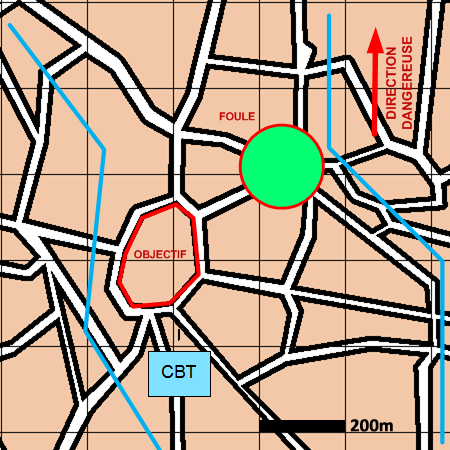

NIVEAU :Automate
ARME :Melee
MISSION :Controler Foule
Objectif principal
- Contrôler
- Renseigner
Modalités d'exécution
-
Les éléments de mêlée et interarme contrôlent les foules dans la zone ;
-
Les unités d'appui soutiennent la mêlée ;
-
Le PC se poste au centre de la zone.
-
Si les pions ne peuvent contenir la foule (Comptes rendus "Situation difficilement tenable face à la foule" et "décrochage face à la foule") alors ils se sauvegardent et terminent leur mission ;
Schéma de modélisation

Paramètres obligatoires
Fuseau : Zone de responsabilité.
Direction Dangereuse : Orientation privilégiée des capteurs.
Zone : La zone dans laquelle contrôler les foules.
Paramètres optionnels
Lignes de début et fin de mission [LDM/LFM]
Nombre d'echelons (1 par défaut)